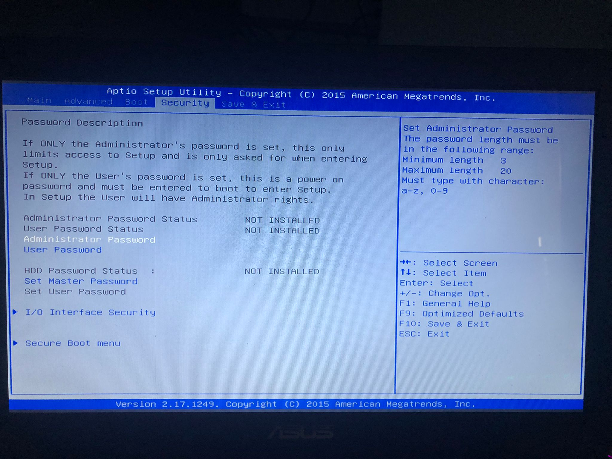
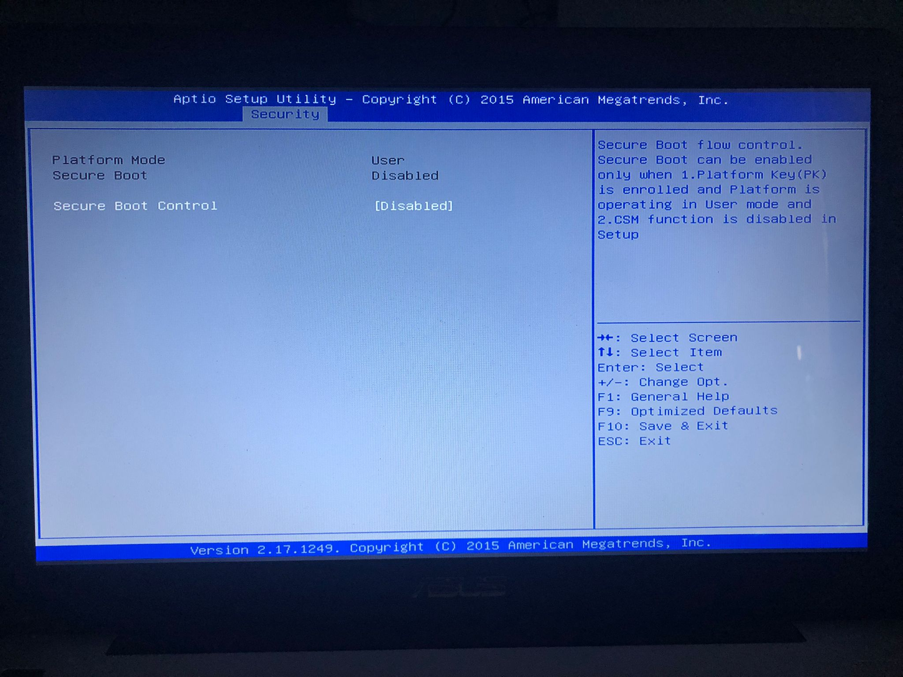
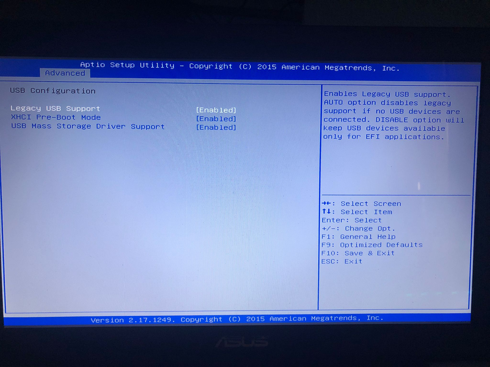
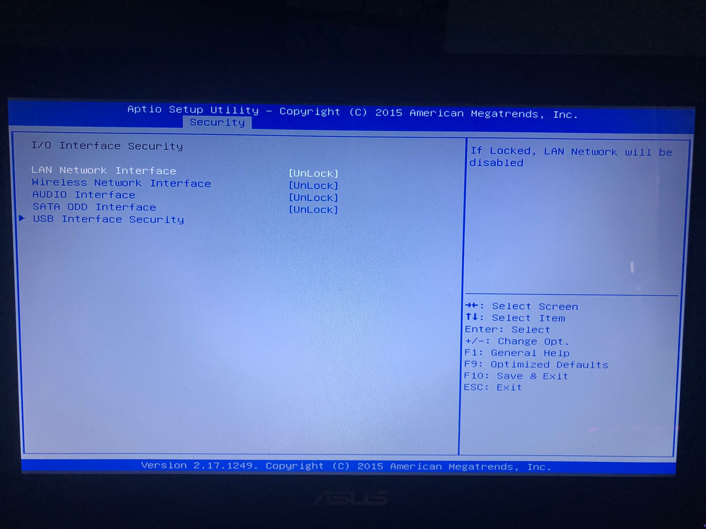
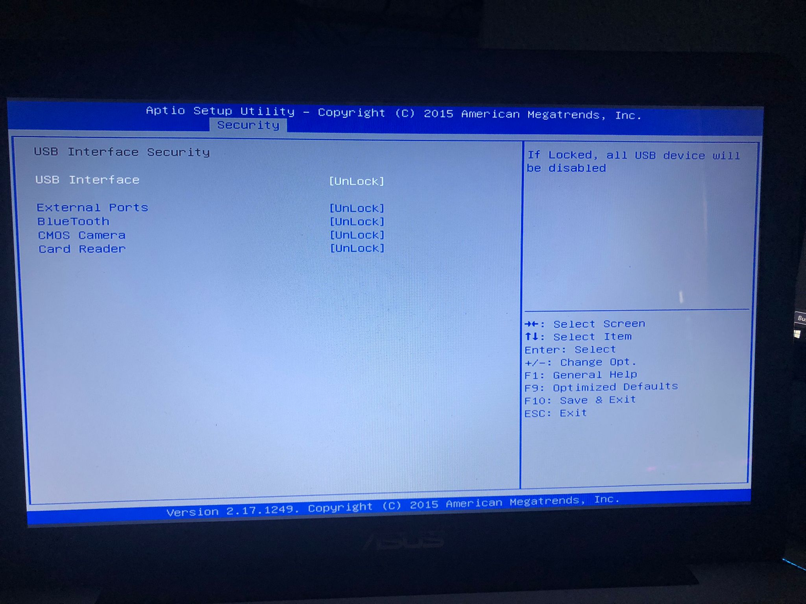

La BIOS, o UEFI en su versión mas moderna, es lo primero que se ejecuta en un ordenador al encenderse, su finción es recordar al dispositivo quién es, que hardware tiene instalado y qué es lo primero que debe arrancar.
Si no configuramos los parámetros necesarios en la BIOS para aportar seguridad al sistema, es muy sencillo manipular el arranque para conseguir acceso al dispositivo. A cotninuación explicaremos qué parámetros configurables, depende del modelo, son los mas comunes modificar para aumentar la seguridad de nuestro equipo.

Si se activa, se solicitara establecer una contraseña para que la próxima vez que se acceda a la BIOS sea necesario introducir esta si deseamos modificar algunos de los parámetros mas avanzados.
Al igual que la contraseña de administración, si se activa, se necesitara establecer una contraseña para que la próxima vez que el usuario acceda a la BIOS este obligado a introducirla, con la diferencia de que con esta contraseña solo seremos capaces de modificar los parámetros mas básicos de la BIOS.
Si se activa este parámetro, se establecera una contraseña para que la próxima vez que se reinicie el equipo, incluso antes de cargar el SO, se le pida al usuario dicha clave para poder iniciar el equipo, de esta manera si el usuario desconoce dicha contraseña no tendrá acceso ni si quiera a la BIOS.

Esta opción permite arrancar el sistema desde un dispositivo USB, aunque solo con modificar este parámetro no es suficiente. En el siguiente apartado veremos el orden de prioridad de arranque que podemos establecer para los posibles intentos de cargar un sistema en nuestro equipo.
Define el orden en el que se produce el arranque del sistema. Cuando se inicie el dispositivo buscara un posible arranque en el primer dispositivo que se indiquie y si no lo encuentra lo intentara en la segunda opción y asi sucesivamente.
En nuestro caso tenemos como primera opción nuestra distribución de Linux, en este caso Ubuntu Mate 20.04, que esta ubicada en nuestro disco duro HDD.

Esta opción deniega la ejecución en el arranque de software no firmada y en general, prohibe la ejecución de cualquier cosa que no sea Windows, aunque algunas distribuciones Linux se han ido adaptando a esto para que también se permita su ejecución.
Legacy USB Support
Opción que permite arrancar el sistema desde un dispositivo USB, aunque también da soporte para poder utilizar teclado y ratón desde la BIOS.
USB Mass Storage Driver Support
Permite que el ordenador pueda interactuar con dispositivos de almacenamiento externos como unidades flash, discos duros externos u otros medios conectados por USB.

I/O Interface Security
Habilita el acceso a los puertos de red, wifi, tarjeta de audio y además también a los puertos USB. De esta manera estos puertos quedan inutilizados para el usuario.

USB Interface Security
Deniega el acceso a los puertos USB del dispositivo e incluso puede denegar también cualquier conexión vía BlueTooth.

Aún siguiendo estas pautas y evitando las malas prácticas, en lo que a seguridad se refiere, no podemos garantizar al 100% un arranque seguro de nuestro sistema ,ya que existen diferentes métodos y acciones para ejecutar modificaciones en nuestra BIOS.
Métodos más comunes para modificar la BIOS
Algunos de los métodos más comunes para modificar/resetear configuraciones de la BIOS son:
Maximizar la seguridad
Para intentar maximizar la seguridad de nuestro dispositivo y permitir el mínimo acceso a la BIOS, entre otras opciones, tendremos en cuenta las siguientes acciones.